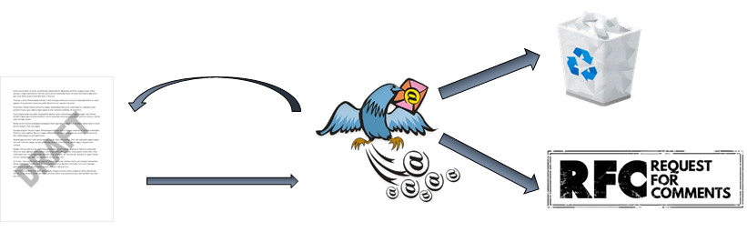

This The Internet Engineering Task Force (IETF) is a decentralised organisation that develops internet standards. The activities of the organisation span several main areas (list of areas). Each area is presided over by several area directors (ADs). Areas are further divided into working groups (WGs), each of which, are chaired by one or more WG chairs (list of active wgs). The working groups bring together participants of similar expertise to focus on a single standard or a smaller number of closely related standards. Each standard starts out as an internet draft. Successfully finished standards are published by the IETF as documents called RFCs. A simplified view of this process is shown below:
.
A draft starts as an individual draft. It is then iteratively refined after discussions via the mailing lists and in live meetings. If successful, it gets adopted by a WG. As a WG draft it is further iteratively refined by the WG members and at some point publication is requested. When this process is finished the draft is published as an RFC. If the process does not successfully finish the draft expires.
All stages of this process are well documented and there is a lot of data available about it. This documentation describes how to easily access this data and gives examples of some basic analyses that can be carried out. There are four main sources of the data to consider:
Datatracker - a metadata database that contains information about the process – participants, documents (+ version histories), groups, meetings, WG chair/ AD director roles, etc.
Mailarchive - an archive of all the email correspondence in the IETF mailing lists ranging back to the 1990s
RfcIndex - an additional metadata database containing information about documents that became RFCs
Documents rsync repo - a repository containing text and xml versions of all versions of all documents (published and unpublished)
Below you will find quickstart and usage examples that will help you quickly get going with your exploration of the available data.
A simple and fast setup that will be a good start for most users is as follows:
pip install ietfdata (extra information available at the library github
page)You should now, have the texts in my-local-mirror-folder
and be able to successfully instantiate the below classes
from ietfdata.datatracker import *
from ietfdata.mailarchive2 import *
from ietfdata.rfcindex import *
ri = RfcIndex()
dt = DataTracker(use_cache = True, mongodb_user = "FrodoB", mongodb_password = "AshNazg")
ma = MailArchive(mongodb_user = "FrodoB", mongodb_password = "AshNazg")
# these imports may not work, depending on what you skippped
from metadata_spam import is_spam
from metadata_seg import get_segmentation, get_signatureYou should now be able to run all the examples as well as write your own analyses.
This section assumes you have set up all the above libraries and caches, but some time has passed and you wish to update to have the most recent version of the data available. The RFCIndex has no cache and is always up to date, and the Datatracker will automatically update it’s cache so there is no action needed there. What you need to manually update is:
1 The texts of the documents
rsync -avz --delete rsync.ietf.org::id-archive/*.txt my-local-mirror-folder2 The mailarchive cache:
from ietfdata.mailarchive2 import *
ma = MailArchive(mongodb_user = 'FrodoB', mongodb_password = 'AshNazg')
ma.update() 3 Additional metadata Once the mailarchive/text has been updated you must regenerate the metadata. This step is only required for those types of metadata that you need (otherwise just ignore it). For commands to refresh the metadata of a particular type please see the corresponding section in the this chapter or this chapter.
The datatracker is a database (available via an online API) that contains various metadata about the workings of the IETF. You may also easily access this data using a python API described in the next subsection. Below is a non-exhaustive list of available data that we expect to be particularly often used in analyses.
| Data class | Fields |
|---|---|
| Person | name, biography, date joined |
| associated person, is primary? | |
| Document | title, abstract, group, state, submissions (versions), date and time, type, authors, events |
| Group | acronym, description, charter, list email, date founded, events, history, roles (chairs) |
For a full list of available fields for every data
class (including more, such as data related to meetings,
ballots, schedules, and
reviewing) please see the ietfdata
DataTracker documentation.
To get started with using the Datatracker API please clone and set up the ietfdata git repository. This comes down to the following commands:
git clone https://github.com/glasgow-ipl/ietfdata.git
cd ietfdata
pipenv install --dev -e .You are now ready to use the python API by instancing the
DataTracker class. For example:
from ietfdata.datatracker import *
dt = DataTracker()
print(dt.groups())However, this means that each time you request some data, a network request will be sent to the official Datatracker server, which can be very slow, and might sometimes overload the server. For this reason we strongly encourage you to avoid this by copying all or most of the Datatracker data to your machine locally. There are two methods to do this.
Method 1 Enable the datatracker cache which uses a MongoDB database. Ideally you can can prepopulate the cache with a recent snapshot of the data as follows:
Install MongoDB if you don’t already have it (this guide was based on version 5.0.5), you can find installation instructions for your favorite OS here
You may now use the datatracker by pointing it to the MongoDB cache (keep in mind that the user you are using needs to have read/write access to the database you restored in step 3):
from ietfdata.datatracker import *
dt = DataTracker(use_cache = True, mongodb_user = 'FrodoB', mongodb_password = 'AshNazg')
print(dt.groups())Method 2 Set up a local Datatracker instance following these instructions and modify the IETFDATA_DT_URL environment variable to point to it (likely “localhost:port”).
doc = dt.document(DocumentURI('/api/v1/doc/document/draft-ietf-mmusic-rfc4566bis/'))
print("Title: {}".format(doc.title))
for doc_author in dt.document_authors(doc):
p = dt.person(doc_author.person)
print("Author: {}".format(p.name))
for submission_uri in doc.submissions:
submission = dt.submission(submission_uri)
print("Revision: {}".format(submission.rev))
for author in submission.parse_authors():
print(" author: {}".format(author["name"]))draft = "draft-ietf-quic-transport"
print(f"{draft}:")
for alias in dt.document_aliases(draft):
for rel in dt.related_documents(target = alias):
rel_type = dt.relationship_type(rel.relationship)
rel_source = dt.document(rel.source)
assert rel_type is not None
assert rel_source is not None
if dt.document_type(rel_source.type) == dt.document_type_from_slug("draft"):
print(F" {rel_type.revname} {rel_source.name}-{rel_source.rev}") for submission in dt.submissions(date_since = "2021-11-01", date_until = "2021-11-30"):
print(f"{submission.name}-{submission.rev}")
print(f" submitted: {submission.submission_date}")
for author in submission.parse_authors():
print(f" author: {author['name']}", end="")
if author['email'] is not None:
print(f" <{author['email']}>", end="")
if author['affiliation'] is not None:
print(f", {author['affiliation']}", end="")
print("")
for url in submission.urls():
print(f" {url}")
p = dt.person_from_email("csp@csperkins.org")
for da in dt.documents_authored_by_person(p):
doc = dt.document(da.document)
print(doc.title)
print(doc.name)
print("")
rfc = ri.rfc("RFC8280")
if rfc is not None:
for d in dt.draft_history_for_rfc(rfc):
print(" {0: <50} | {1} | {2}".format(d.draft.name, d.rev, d.date.strftime("%Y-%m-%d")))
Note: this example also uses the RFCIndex class
(ri = RfcIndex())
g = dt.group_from_acronym("rmcat")
for draft in dt.documents(group=g, doctype=dt.document_type_from_slug("draft")):
print(draft.name)
for sub_url in draft.submissions:
sub = dt.submission(sub_url)
print(F" {sub.document_date.strftime('%Y-%m-%d')} {sub.name}-{sub.rev}")
for a in sub.parse_authors():
print(F" {a['name']} <{a['email']}>")
print("")
print(F"The IETF chair is {dt.ietf_chair().name}")
print("The IESG members are:")
for m in dt.iesg_members():
print(F" {m.name}")
print("")
print("The IETF working group chairs are:")
for m in dt.working_group_chairs():
print(F" {m.name}")
print("")
for alias in dt.person_aliases(name="Colin Perkins"):
for email in dt.email_for_person(dt.person(alias.person)):
print(email.address)
Here are some other available examples that use the Datatracker API:
Drafts recently requesting publication
Setting up the RFCIndex API is similar and simpler than setting up the Datatracker API, because there is no cache to set up. Simply install the ietfdata library (if you have not already done so):
git clone https://github.com/glasgow-ipl/ietfdata.git
cd ietfdata
pipenv install --dev -e .And you are ready to go:
from ietfdata.rfcindex import *
ri = RFCIndex()
print(ri.rfc("RFC8280")) Some useful data provided by this part of the library includes
title,authors,date,working group,area,
obsoletes, and obsoleted-by. For details
please see the ietfdata
RFCIndex documentation.
for rfc in ri.rfcs():
print("")
print(rfc.doc_id)
print(" rfc.title | {} | {}".format(rfc.doc_id, rfc.title))
print(" rfc.draft | {} | {}".format(rfc.doc_id, rfc.draft))
for kw in rfc.keywords:
print(" rfc.keyword | {} | {}".format(rfc.doc_id, kw))
print(" rfc.date | {} | {} {}".format(rfc.doc_id, rfc.month, rfc.year))
print(" rfc.stream | {} | {}".format(rfc.doc_id, rfc.stream))
print(" rfc.wg | {} | {}".format(rfc.doc_id, rfc.wg))
print(" rfc.area | {} | {}".format(rfc.doc_id, rfc.area))
print(" rfc.publ_status | {} | {}".format(rfc.doc_id, rfc.publ_status))
print(" rfc.curr_status | {} | {}".format(rfc.doc_id, rfc.curr_status))
print(" rfc.april_fool | {} | {}".format(rfc.doc_id, rfc.day is not None))
print(" rfc.page_count | {} | {}".format(rfc.doc_id, rfc.page_count))
for doc in rfc.updates:
print(" rfc.updates | {} | {}".format(rfc.doc_id, doc))
for doc in rfc.updated_by:
print(" rfc.updated-by | {} | {}".format(rfc.doc_id, doc))
for doc in rfc.obsoletes:
print(" rfc.obsoletes | {} | {}".format(rfc.doc_id, doc))
for doc in rfc.obsoleted_by:
print(" rfc.obsoleted-by | {} | {}".format(rfc.doc_id, doc))
for a in rfc.authors:
print(" rfc.author | {} | {}".format(rfc.doc_id, a))There is a lot more data available! Please see full example for details.
for rfc in ri.rfcs():
total += 1
if rfc.stream == "Legacy":
legacy += 1
if rfc.stream in streams:
streams[rfc.stream] += 1
else:
streams[rfc.stream] = 0
for stream in streams:
print(f"{stream:11} : {streams[stream]:5d} ", end="")
print(f"({streams[stream] / total * 100:4.1f}%)", end="")
if stream != "Legacy":
print(f" ({streams[stream] / (total - legacy) * 100:4.1f}% excluding legacy)", end="")
print(f"")This part of the data contains the text of the messages from the IETF
mailing lists, including all the email headers (most useful being
from, to, subject,
date, in-reply-to) and the name of the mailing
list to which the email was sent. The library also provides a way to
traverse entire threads of emails that form during discussion.
For an in-depth look of all the available functionality please see the ietfdata MailArchive documentation.
To get started with using the Mailarchive API please clone and set up the ietfdata git repository (if you have not already done so):
git clone https://github.com/glasgow-ipl/ietfdata.git
cd ietfdata
pipenv install --dev -e .Similarly as the Datatracker, the Mailarchive class can use a mailarchive cache – a (most often local) MongoDB database containing a snapshot of the data. In contrast to the Datatracker, usage of this cache is not optional you must have it set up as follows:
Install MongoDB if you don’t already have it (this guide was based on version 5.0.5), you can find installation instructions for your favorite OS here
Populate the cache by either:
from ietfdata.mailarchive2 import *
ma = MailArchive(mongodb_user = 'FrodoB', mongodb_password = 'AshNazg')
ma.update() This will create a database called
ietfdata_mailarchive_v2 and populate it with messages from
the IETF mailarchive server.
You may now use the MailArchive class by pointing it to
the MongoDB cache (keep in mind that the user you are using needs to
have read/write access to the database restored in step 3):
from ietfdata.mailarchive2 import *
ma = MailArchive(mongodb_user = 'FrodoB', mongodb_password = 'AshNazg')
print(ma.mailing_list_names())NOTE: Unlike with the Datatracker cache, which will
automatically fetch new data from the server whenever it is available,
the mailarchive cache will not automatically check for
updates on the server, if you want to get up to date data you
must call the update() method.
ml_name = "100all"
ml = archive.mailing_list(ml_name)
if ml:
thr_root_dict = ml.threads(this_list_only = True)
for thr_root_key in thr_root_dict:
thread_root_msg = thr_root_dict[thr_root_key][0]
for msg in iterate_over_thread(thread_root_msg):
# your code heremsg.header("from")
msg.header("to")
msg.header("reply-to")Each of these returns a list of strings which are the values of that
header (some of them can have multiple values, if they appeared in the
header several times. You can also call
msg.header("message-id") to get the message-id of the
message. You can find more information about the behavior in the documentation
of the Envelopoe class
These are repositories with code that produces additional metadata and data structures building on the existing data from the Datatracker/Mailarchive. Currently the following metadata types are available, each type is in a separate git repo.
These are completely separated. If you are only interested in one type of metadata you can only use that type and completely ignore the rest.
Clone the corresponding repository:
git clone https://github.com/sodestream/ietfdata-metadata-segTo regenerate the data (after initial install or after mailarchive update) run:
./preprocess-seg-to-csv-parallel.sh
python preprocess-seg-to-db.pyNote: This will fully occupy your CPU, we recommend running over night.
Clone the corresponding repository:
git clone https://github.com/sodestream/ietfdata-metadata-spamTo regenerate the data (after initial install or after mailarchive update) run:
tar xvzf spamrres.tar.gz
python run_preproc.pyClone the corresponding repository:
git clone https://github.com/sodestream/ietfdata-metadata-igTo regenerate the data (after initial install or after mailarchive update) run:
python generate-intgraph.pyThe interaction graph is in a file named
intgraph.csv.
ml_name = "100all"
ml = archive.mailing_list(ml_name)
if ml:
thr_root_dict = ml.threads(this_list_only = True)
for thr_root_key in thr_root_dict:
thread_root_msg = thr_root_dict[thr_root_key][0]
for msg in iterate_over_thread(thread_root_msg):
# spam
print(is_spam(msg, archive))
# signature
print(get_signature(msg, archive))
# segmentations / pseudolabels
for segment in get_segmentation(msg, archive):
print(segment.id)
print(segment.type)
print(segment.content)
print(get_pseudolabels(msg, segment.id))
# interaction graph, is a csv that will be generated when installing the metadata-access library
int_df = pd.read_csv("metadata-ig/intgraph.csv")
print(int_df.head()) ml_name = "100all"
ml = archive.mailing_list(ml_name)
if ml:
thr_root_dict = ml.threads(this_list_only = True)
for thr_root_key in thr_root_dict:
thread_root_msg = thr_root_dict[thr_root_key][0]
for msg in iterate_over_thread(thread_root_msg):
message_clean_text = "\n".join([s for s in get_segmentation(msg, archive) if s.type == "normal"])
print(message_clean_text)Note: segments can have three types “normal” (green below) is regular text, “quote” is quoted text (red below), and “signature” is the signature (blue below). For example:
>> Captain, can I have some shore
leave
>> to get some rest from exploring.
Sure, also, next time use subspace radio instead of email.
Best,
Jean-Luc
ml_name = "100all"
ml = archive.mailing_list(ml_name)
if ml:
thr_root_dict = ml.threads(this_list_only = True)
for thr_root_key in thr_root_dict:
thread_root_msg = thr_root_dict[thr_root_key][0]
for msg in iterate_over_thread(thread_root_msg):
# segmentations / pseudolabels
for segment in get_segmentation(msg, archive):
print("Segment %d is quoting segment %d" % (segment.id, segment.antecedent))
In the email from the previous example, the green segment would have
the id of the red segment in its antecedent field. The
antecedent field of the red and blue segments would be
-1.
The csv file containing the interaction graph can be downloaded at this link. Each row represents one interaction, i..e, one message that was sent. It contains the following columns:
| Column | Description |
|---|---|
| current_from_email | Comma separated list of email addresses in the “from” header field of the current message (the message that was sent in this interaction). |
| current_to_email | Comma separated list of email addresses in the “to” header field of the current message |
| reply_to_from_email | Comma separated list of email addresses in the “from” header field of the message is referred to by the “reply-to” header field of the current message (should correspond to the previous column, apart from not having a mailing list name) |
| current_message_id | The “message-id” header field of the current message. |
| current_uid | The “uid header field of the current message. |
| current_uidvalidity | The “uidvalidity” header field of the current message. |
| reply_to_message_id | The “message-id” header field of the message referred to by the “reply-to” header field of the current message. |
| reply_to_uid | The “uid” header field of the message referred to by the “reply-to” header field of the current message. |
| reply_to_uidvalidity | The “uidvalidity” header field of the message referred to by the “reply-to” header field of the current message. |
| date | The date and time of the current messsage (“YYYY-MM-DD HH:MM:SS”) |
| mailing_list_name | Name of the mailing list that the current message was sent to. |
Full texts of drafts (all versions) and RFC-s are available in an
rsync repo. Most texts are available in both txt and xml formats, with
xml being easier to automatically parse. This repository includes some
other text data including WG charters,
proceedings, IESG minutes, and
slides.
To download all texts in txt format:
rsync -avz --delete rsync.ietf.org::id-archive/*.txt my-local-mirror-folderSlight changes to the rsync name/path in this command fetches various data. Please refer to this page to see all available paths. The documents are named “draft-name” followed by a two-digit version number. E.g., “draft-perkins-aodv6-01” (“draft-perkins-aodv6” is the name an “01” is the version number).
TODO summary of W3C
TODO
TODO
TODO
TODO
TODO
TODO
TODO
TODO
TODO
TODO
TODO
TODO
TODO